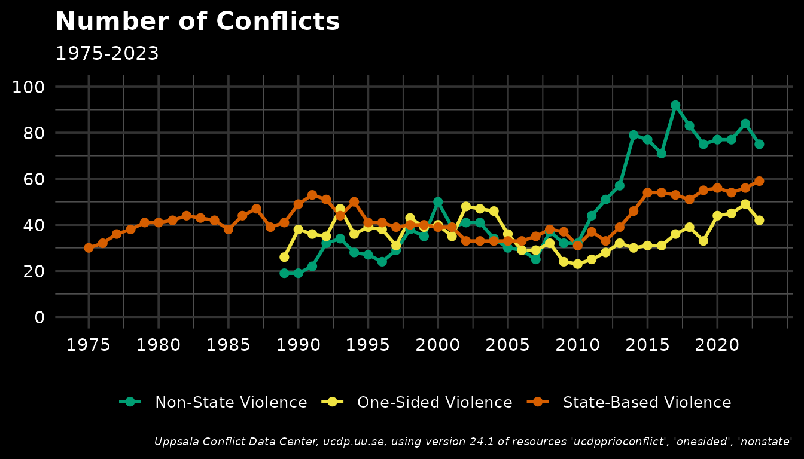

conflictoR
conflictoR.RmdOverview
The conflictoR package provides easy access to the Uppsala Conflict Data Program (UCDP) API, allowing you to retrieve and analyze conflict data directly in R. UCDP is the world’s main provider of data on organized violence, offering datasets on state-based conflicts, non-state conflicts, and one-sided violence.
Basic Usage
The main function in conflictoR is cl_get_data(), which
retrieves datasets from the UCDP API. You need to specify two
parameters:
-
resource: The type of conflict data (e.g., “ucdpprioconflict”, “nonstate”, “onesided”) -
version: The version of the dataset (e.g., “24.1”, “23.1”)
# Get state-based conflict data
state_conflicts <- cl_get_data(
resource = "ucdpprioconflict",
version = "24.1"
)
# Get non-state conflict data
nonstate_conflicts <- cl_get_data(
resource = "nonstate",
version = "24.1"
)
# Get one-sided violence data
onesided_conflicts <- cl_get_data(
resource = "onesided",
version = "24.1"
)Exploring the Data
Let’s examine the structure of the data:
# View first few rows
head(state_conflicts)
#> conflict_id location side_a side_a_Id side_a_2nd
#> 1 11342 India Government of India 141
#> 2 11342 India Government of India 141
#> 3 11343 Egypt, Israel Government of Egypt 117
#> 4 11343 Egypt, Israel Government of Egypt 117
#> 5 11343 Egypt, Israel Government of Egypt 117
#> 6 11343 Egypt, Israel Government of Egypt 117
#> side_b side_b_Id side_b_2nd incompatibility territory_name year
#> 1 GNLA 1163 1 Garoland 2012
#> 2 GNLA 1163 1 Garoland 2014
#> 3 Government of Israel 121 1 Suez/Sinai 1967
#> 4 Government of Israel 121 1 Suez/Sinai 1969
#> 5 Government of Israel 121 1 Suez/Sinai 1970
#> 6 Government of Israel 121 1 Suez/Sinai 1973
#> intensity_level cumulative_intensity type_of_conflict start_date start_prec
#> 1 1 0 3 1997-05-29 1
#> 2 1 0 3 1997-05-29 1
#> 3 2 1 2 1967-06-05 1
#> 4 1 1 2 1967-06-05 1
#> 5 1 1 2 1967-06-05 1
#> 6 2 1 2 1967-06-05 1
#> start_date2 start_prec2 ep_end ep_end_date ep_end_prec gwno_a gwno_a_2nd
#> 1 2012-11-15 1 1 2012-12-21 750
#> 2 2014-07-01 1 1 2014-11-27 750
#> 3 1967-06-05 1 1 1967-06-10 651
#> 4 1969-03-06 1 0 651
#> 5 1969-03-06 1 1 1970-08-07 651
#> 6 1973-10-06 1 1 1973-10-24 651
#> gwno_b gwno_b_2nd gwno_loc region version
#> 1 750 3 24.1
#> 2 750 3 24.1
#> 3 666 651, 666 2 24.1
#> 4 666 651, 666 2 24.1
#> 5 666 651, 666 2 24.1
#> 6 666 651, 666 2 24.1
# Check available columns
names(state_conflicts)
#> [1] "conflict_id" "location" "side_a"
#> [4] "side_a_Id" "side_a_2nd" "side_b"
#> [7] "side_b_Id" "side_b_2nd" "incompatibility"
#> [10] "territory_name" "year" "intensity_level"
#> [13] "cumulative_intensity" "type_of_conflict" "start_date"
#> [16] "start_prec" "start_date2" "start_prec2"
#> [19] "ep_end" "ep_end_date" "ep_end_prec"
#> [22] "gwno_a" "gwno_a_2nd" "gwno_b"
#> [25] "gwno_b_2nd" "gwno_loc" "region"
#> [28] "version"Filtering Data
You can filter data directly in the API call using various parameters:
# Get conflicts for specific years
recent_conflicts <- cl_get_data(
resource = "ucdpprioconflict",
version = "24.1",
year = c(2020, 2021, 2022, 2023)
)Visualizing Conflict Trends
One common analysis is tracking conflict counts over time:
## making a dataframe with all combinations of datasets and versions
datasets = c("ucdpprioconflict", "nonstate", "onesided")
version <- "24.1"
## querying this data using the conflictoR package
state <- state_conflicts |>
select(year, conflict_id, version) |>
mutate(
dataset = datasets[1],
year = as.character(year),
version = "24.1"
)
nonstate <- nonstate_conflicts |>
select(year, conflict_id, version) |>
mutate(
dataset = datasets[2],
year = as.character(year),
version = "24.1"
)
onesided <- onesided_conflicts |>
select(year, conflict_id, version) |>
mutate(
dataset = datasets[3],
year = as.character(year),
version = "24.1"
)
## clean the data to count actual conflicts and merge the sets
clean_full_data <- bind_rows(state,
nonstate,
onesided) |>
count(year, version, dataset) |>
group_by(year, dataset) |>
mutate(year = as.numeric(year))
colors <- c(
"ucdpprioconflict" = "#D55E00", # red for State-Based Violence
"nonstate" = "#009E73", # green for Non-State Violence
"onesided" = "#F0E442" # yellow for One-Sided Violence
)
labels <- c(
"ucdpprioconflict" = "State-Based Violence",
"nonstate" = "Non-State Violence",
"onesided" = "One-Sided Violence"
)
# Generate the plot
ggplot(data = clean_full_data |>
filter(year >= 1975 & year <= 2023, version == "24.1")) +
geom_line(aes(x = year, y = n, color = dataset, group = dataset), size = 1) +
geom_point(aes(x = year, y = n, color = dataset), size = 2) +
scale_color_manual(values = colors,
labels = labels) +
labs(title = "Number of Conflicts", subtitle = "1975-2023", caption = "Uppsala Conflict Data Center, ucdp.uu.se, using version 24.1 of resources 'ucdpprioconflict', 'onesided', 'nonstate'") +
scale_x_continuous(breaks = seq(1975, 2023, 5)) +
scale_y_continuous(breaks = seq(0, 100, 20), limits = c(0,100)) +
theme_minimal(base_size = 14) +
theme(
plot.background = element_rect(fill = "black", color = NA),
panel.background = element_rect(fill = "black", color = NA),
panel.grid.major = element_line(color = "grey20"),
panel.grid.minor = element_line(color = "grey30"),
axis.text = element_text(color = "white"),
plot.caption = element_text(color = "white", face = "italic", size = 7),
axis.title = element_blank(),
plot.title = element_text(color = "white", size = 16, face = "bold"),
plot.subtitle = element_text(color = "white", size = 12),
legend.position = "bottom",
legend.title = element_blank(),
legend.text = element_text(color = "white", size = 10),
legend.background = element_rect(fill = "black", color = NA)
)
Working with Event Data (GED)
For more granular analysis, use the Georeferenced Event Dataset:
# Get event-level data for a specific region and time period
syria_events <- cl_get_data(
resource = "gedevents",
version = "24.1",
country = 652,
start_date = "2020-01-01",
end_date = "2020-12-31"
)Available Resources
conflictoR supports the following UCDP resources:
| Resource | Description |
|---|---|
ucdpprioconflict |
State-based armed conflicts |
dyadic |
Dyadic-level conflict data |
battledeaths |
Battle-related deaths |
nonstate |
Non-state conflicts |
onesided |
One-sided violence against civilians |
gedevents |
Georeferenced event dataset (GED) |
Best Practices
- Always specify the version: This ensures reproducibility of your analysis
- Use filters: API filters are more efficient than downloading all data and filtering locally
- Check the documentation: Different resources accept different parameters
- Cite your sources: Always cite UCDP and specify the version used
Getting Help
If you encounter any issues or have questions:
- Open an issue on GitHub: https://github.com/datapumpernickel/conflictoR/issues
- Check the function documentation:
?cl_get_data